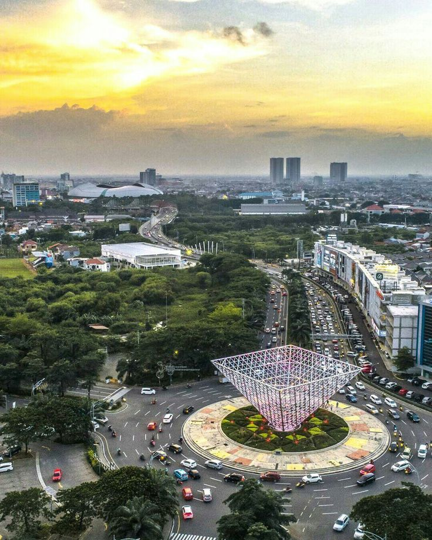

BEKASI
APA ITU BEKASI?
Kota Bekasi adalah salah satu kota di Provinsi Jawa Barat, Indonesia. Kota ini berbatasan langsung dengan DKI Jakarta dari arah barat. Pada pertengahan tahun 2024, jumlah penduduk Kota Bekasi berjumlah 2.526.133 jiwa. Meskipun berstatus kota penyangga, kota ini merupakan kota terbesar di Provinsi Jawa Barat menurut jumlah penduduk.[2][4] Kota Bekasi merupakan bagian dari kawasan metropolitan Jakarta Raya[a] dan menjadi kota penyangga dengan jumlah penduduk terbanyak se-Indonesia. Saat ini Kota Bekasi berkembang menjadi tempat tinggal kaum urban dan sentra industri.[5]
Etimologi
Nama Bekasi berasal dari kata Bagasasi yang artinya sama dengan Candrabaga yang tertulis di dalam Prasasti Tugu era Kerajaan Tarumanegara, yaitu nama sungai yang melewati kota ini.
Sejarah BEKASI
Dayeuh Sundasembawa atau Jayagiri, itulah sebutan Bekasi tempo dahulu sebagai ibu kota Kerajaan Tarumanagara. Luas Kerajaan ini mencakup wilayah Bekasi, Sunda Kelapa (Jakarta), Pasir Awi (Jonggol), Depok, Cibinong, Bogor, hingga ke wilayah Purwalingga. Menurut para ahli sejarah dan fisiologi, letak Dayeuh Sundasembawa atau Jayagiri sebagai ibu kota Tarumanagara adalah di wilayah Bekasi sekarang. Dayeuh Sundasembawa inilah daerah asal Maharaja Tarusbawa (669–723 M) pendiri Kerajaan Sunda dan seterusnya menurunkan Raja-raja Sunda sampai generasi ke-40 yaitu Ratu Ragumulya (1567–1579 M). Wilayah Bekasi tercatat sebagai daerah yang banyak memberi informasi tentang keberadaan Tatar Sunda pada masa lampau. Di antaranya dengan ditemukannya 4 prasasti yang dikenal dengan nama Prasasti Kebantenan. Keempat prasasti ini merupakan keputusan dari Sri Baduga Maharaja (Prabu Siliwangi, Jaya Dewa) yang ditulis dalam 5 lembar lempeng tembaga. Sejak abad ke-5 Masehi pada masa Kerajaan Tarumanagara, abad ke-8 Kerajaan Galuh, dan Kerajaan Pajajaran pada abad ke-14, Bekasi menjadi wilayah kekuasaan karena merupakan salah satu daerah strategis, yakni sebagai penghubung antara Pelabuhan Sunda Kelapa (Jakarta).[butuh rujukan]

Sejarah Sebelum Tahun 1949
Kota Bekasi ternyata mempunyai sejarah yang sangat panjang dan penuh dinamika. Ini dapat dibuktikan perkembangannya dari zaman ke zaman, sejak zaman Hindia Belanda, pendudukan militer Jepang, perang kemerdekaan, dan zaman Republik Indonesia. Di zaman Hindia Belanda, Bekasi masih merupakan Kewedanaan (District), termasuk Regenschap (Kabupaten) Meester Cornelis. Saat itu kehidupan masyarakatnya masih dikuasai oleh para tuan tanah keturunan Tionghoa.[butuh rujukan] Kondisi ini terus berlanjut sampai pendudukan militer Jepang. Pendudukan militer Jepang turut mengubah kondisi masyarakat saat itu. Jepang melaksanakan Japanisasi di semua sektor kehidupan. Nama Batavia diganti dengan nama Jakarta. Regenschap Meester Cornelis menjadi KEN Jatinegara yang wilayahnya meliputi Gun Cikarang, Gun Kebayoran, dan Gun Matraman. Setelah proklamasi kemerdekaan Republik Indonesia tanggal 17 Agustus 1945, struktur pemerintahan kembali berubah, nama Ken menjadi Kabupaten, Gun menjadi Kewedanaan, Son menjadi Kecamatan, dan Kun menjadi Desa atau Kelurahan. Saat itu ibu kota Kabupaten Jatinegara selalu berubah-ubah, mula-mula di Tambun, lalu ke Cikarang, kemudian ke Bojong (Kedung Gede). Pada waktu itu Bupati Kabupaten Jatinegara adalah Bapak Rubaya Suryanaatamirharja. Tidak lama setelah pendudukan Belanda, Kabupaten Jatinegara dihapus, kedudukannya dikembalikan seperti zaman Regenschap Meester Cornelis menjadi Kewedanaan. Kewedanaan Bekasi masuk ke dalam wilayah Batavia en Omelanden. Sementara, batas Pondok Gede, Kali Bekasi, dan Serangbaroe ke Selatan yaitu wilayah Kranggan (Jatisampurna), Awirangan, Setu, hingga Tjibaroesa Buitenzorg (Bogor) menjadi bagian dari Negara Pasundan. Batas Bulak Kapal ke Timur termasuk wilayah negara Pasundan di bawah Kabupaten Karawang, sedangkan sebelah Barat Bulak Kapal termasuk wilayah negara Federal sesuai Staatsblad van Nederlandsch Indie 1948 No.178 Negara Pasundan.[6]
Kondisi geografis wilayah bekasi

Luas Wilayah dan Letak Geografis Kota Bekasi memiliki luas wilayah sekitar 210,49 km2, dengan batas wilayah Kota Bekasi adalah: • Sebelah Utara : Kabupaten Bekasi • Sebelah Selatan : Kabupaten Bogor dan Kota Depok • Sebelah Barat : Provinsi DKI Jakarta • Sebelah Timur : Kabupaten Bekasi Letak geografis : 106o48’28’’ – 107o27’29’’ Bujur Timur dan 6o10’6’’ – 6o30’6’’ Lintang Selatan. Topografi Kondisi Topografi kota Bekasi dengan kemiringan antara 0 – 2 % dan terletak pada ketinggian antara 11 m – 81 m di atas permukaan air laut. • Ketinggian >25 m : Kecamatan Medan Satria, Bekasi Utara, Bekasi Selatan, Bekasi Timur dan Pondok Gede • Ketinggian 25 – 100 m : Kecamatan Bantargebang, Pondok Melati, Jatiasih Wilayah dengan ketinggian dan kemiringan rendah yang menyebabkan daerah tersebut banyak genangan, terutama pada saat musim hujan yaitu: di Kecamatan Jatiasih, Bekasi Timur, Rawalumbu, Bekasi Selatan, Bekasi Barat, dan Kecamatan Pondok Melati. Geologi dan Jenis Tanah Struktur geologi wilayah Kota Bekasi didominasi oleh pleistocene volcanik facies namun terdapat dua kecamatan yang memiliki karakteristik struktur lainnya yaitu: • Bekasi Utara : Struktur Aluvium • Bekasi Timur : Struktur Miocene Sedimentary Facies Di Bekasi Selatan terdapat sumur gas JNG-A (106o 55’ 8,687” BT; 06o 20’54,051”) dan Sumur JNGB (106o 55’ 21,155” BT; 06o 21’ 10,498”) Hidrologi dan klimatologi Kondisi hidrologi Kota Bekasi dibedakan menjadi dua: 1. Air permukaan, mencakup kondisi air hujan yang mengalir ke sungai-sungai. Wilayah Kota Bekasi dialiri 3 (tiga) sungai utama yaitu Sungai Cakung, Sungai Bekasi dan Sungai Sunter, beserta anak-anak sungainya. Sungai Bekasi mempunyai hulu di Sungai Cikeas yang berasal dari gunung pada ketinggian kurang lebih 1.500 meter dari permukaan air. Air permukaan yang terdapat di wilayah Kota Bekasi meliputi sungai/kali Bekasi dan beberapa sungai/kali kecil serta saluran irigasi Tarum Barat yang selain digunakan untuk mengairi sawah juga merupakan sumber air baku bagi kebutuhan air minum wilayah Bekasi (kota dan kabupaten) dan wilayah DKI Jakarta. Kondisi air permukaan kali Bekasi saat ini tercemar oleh limbah industri yang terdapat di bagian selatan wilayah Kota Bekasi (industri di wilayah Kabupaten Bogor). 2. Air tanah Kondisi air tanah di wilayah Kota Bekasi sebagian cukup potensial untuk digunakan sebagai sumber air bersih terutama di wilayah selatan Kota Bekasi, tetapi untuk daerah yang berada di sekitar TPA Bantargebang kondisi air tanahnya kemungkinan besar sudah tercemar. Wilayah Kota Bekasi secara umum tergolong pada iklim kering dengan tingkat kelembaban yang rendah. Kondisi lingkungan sehari-hari sangat panas. Hal ini terlebih dipengaruhi oleh tata guna lahan yang meningkat terutama industri/perdagangan dan permukiman. Temperatur harian diperkirakan berkisar antara 24 – 33° C.
ABOUT ME
Saya adalah seorang pengembang web yang masih belajar yang berfokus kepada pengembangan web dan pen design web. saya seorang mahasiswa di kampus Bina Sarana Informatika yang ingin belajar lebih mengenai web dan developer. saya sudah sedikit memahami algoritma algoritma dari web ini mulai dari html, css, python, dan javasript. dan jika ada perusahaan yang ingin meng hire saya langsung saja hubungi linkedin yang ada di contact saya.